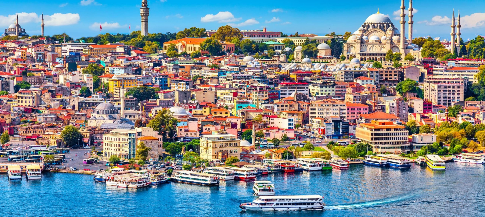

Istanbul, Turkey

Istanbul, straddling Europe and Asia across the Bosphorus Strait, is a city rich in history and culture. Known for its stunning architecture, vibrant bazaars, and diverse culinary scene, Istanbul offers an unforgettable experience where East meets West.
Popular Attractions
Discover the top attractions that highlight Istanbul's unique charm:
- Hagia Sophia: This architectural marvel has served as a cathedral, mosque, and museum, showcasing Byzantine and Ottoman design.
- Topkapi Palace: The opulent residence of Ottoman sultans, featuring stunning courtyards, lush gardens, and impressive artifacts.
- Blue Mosque: Renowned for its blue tiles and grand domes, this historic mosque is a must-see landmark.
- Grand Bazaar: One of the largest and oldest covered markets in the world, perfect for exploring traditional crafts, jewelry, and spices.
- Basilica Cistern: An ancient underground water reservoir with atmospheric lighting and impressive columns.
Adventure Activities
Experience Istanbul’s thrilling side with these activities:
- Bosphorus Cruise: Enjoy a scenic boat ride along the Bosphorus Strait, offering views of historic palaces and waterfront mansions.
- Hot Air Balloon Ride: Take a balloon ride over Istanbul’s skyline for a unique perspective of the city.
- Whirling Dervishes Ceremony: Witness the mesmerizing Sufi dance performance known for its spiritual significance.
- Shopping Spree: Explore Istanbul’s modern shopping districts like Nişantaşı and İstiklal Avenue.
Food Experiences
Indulge in Istanbul’s diverse culinary offerings:
- Kebabs: Taste traditional Turkish kebabs at local restaurants or street food vendors.
- Baklava: Enjoy this sweet pastry made of layers of filo dough, nuts, and honey at renowned bakeries.
- Meze: Sample a variety of small dishes, from hummus to stuffed grape leaves, at traditional meyhane (taverns).
- Turkish Tea: Experience the cultural ritual of drinking Turkish tea in one of Istanbul’s historic tea gardens.
Shopping Spots
From bustling markets to chic boutiques, Istanbul has something for every shopper:
- Istiklal Avenue: A lively street with a mix of high-end shops, local boutiques, and historic buildings.
- Spice Bazaar: Explore this colorful market filled with spices, sweets, and traditional Turkish goods.
- Kadıköy Market: A vibrant market on the Asian side, known for its fresh produce, local delicacies, and lively atmosphere.
- Arasta Bazaar: A charming bazaar near the Blue Mosque, offering traditional crafts and souvenirs.
Cultural Experiences
Immerse yourself in Istanbul’s rich cultural heritage:
- Turkish Bath (Hammam): Relax in a traditional Turkish bath and experience the local wellness culture.
- Traditional Turkish Music: Enjoy live performances of traditional music at local venues or cultural events.
- Historic Sites Tour: Explore Istanbul’s many historical sites, including the Chora Church and the Suleymaniye Mosque.
- Local Festivals: Participate in annual events such as Istanbul Music Festival and Istanbul Biennial.
Travel Tips
Make the most of your trip to Istanbul with these helpful tips:
- Best Time to Visit: The best time to visit Istanbul is during spring (April to June) and autumn (September to November) for pleasant weather.
- Local Etiquette: Dress modestly when visiting religious sites and be respectful of local customs.
- Transportation: Utilize Istanbul’s efficient public transportation system, including trams, buses, and ferries.
- Language: While Turkish is the official language, English is commonly understood in tourist areas.
Back to Destinations